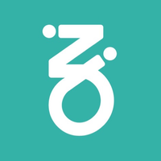
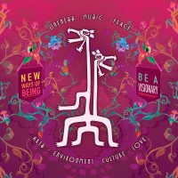
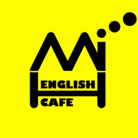

Associação Cultural Galeria Zé dos Bois
Colaborador, 2019 -2020
- A "ZDB" é uma das associações culturais mais antigas de Lisboa, situada no Bairro Alto. Famosa pela sua selecção de culto tanto ao nível nacional como internacional; promove Múscia, Artes Visuais e Performativas.
Zarco
Guía Turístico Junho, 2016
- A Zarco é uma mobile app criada no Porto com o intuito de ser a Uber de Guía Turísticos para as cidades de Lisboa e do Porto.
Boom Festival - The Good Mood Production
Colaborador, Agosto 2016
- O Boom Festival é um festival multidisciplinar, sustentável e bianual nas margens do lago de Idanha-a-Nova.
Language Café Mickey Mouse House
Tutor de Línguas, Abril 2016
- Mickey House Language Cafe é um espaço informal para a aprendizagem e prática de línguas estrangeiras. Situa-se em Takadanobaba, Tokyo.